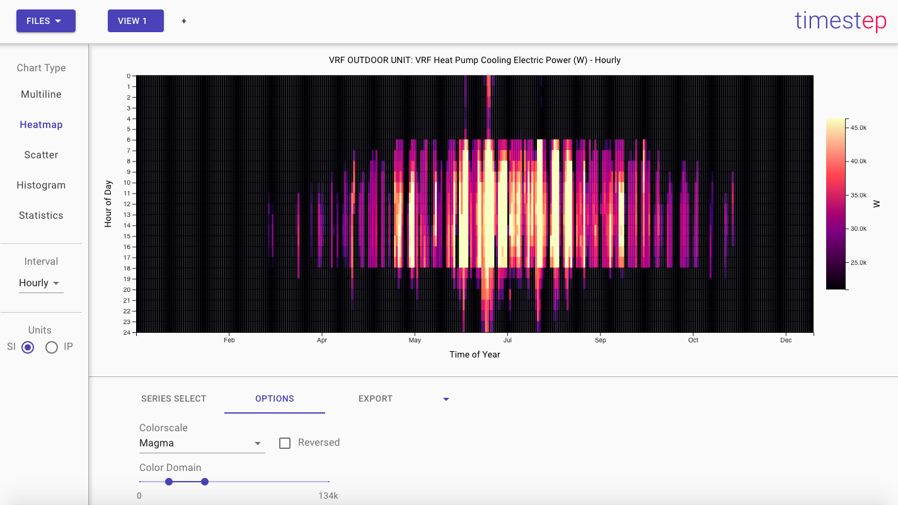
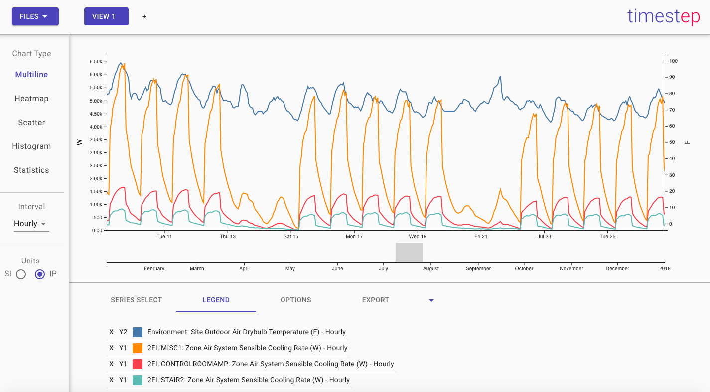
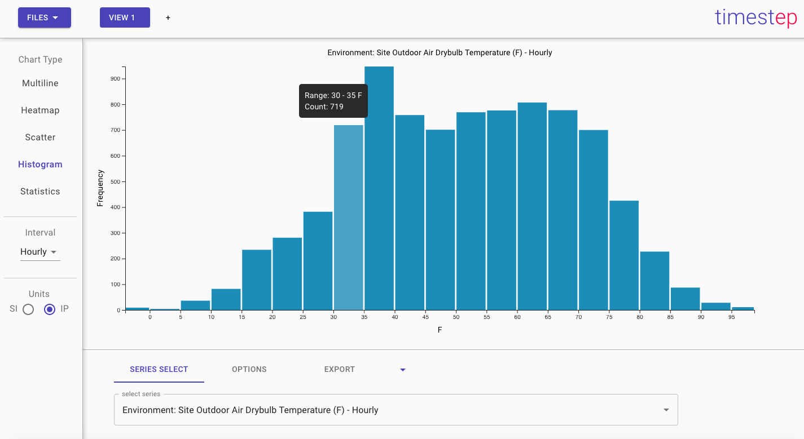
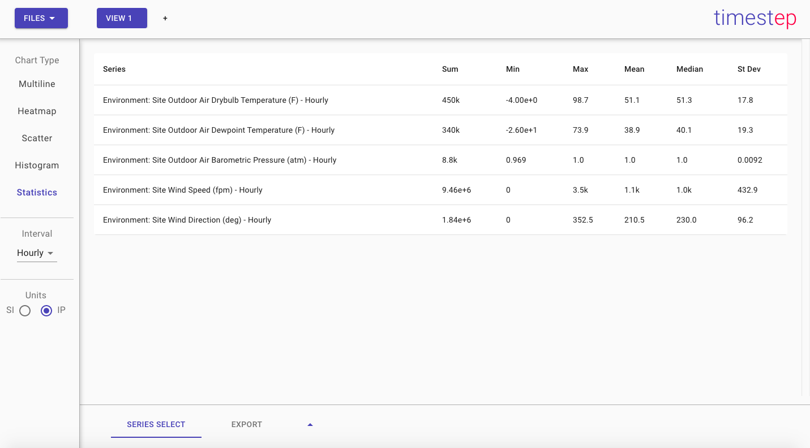
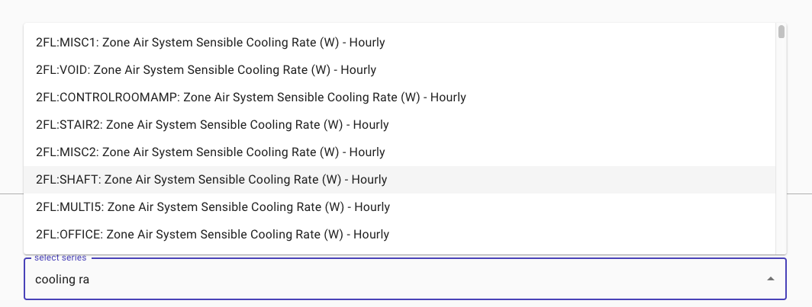
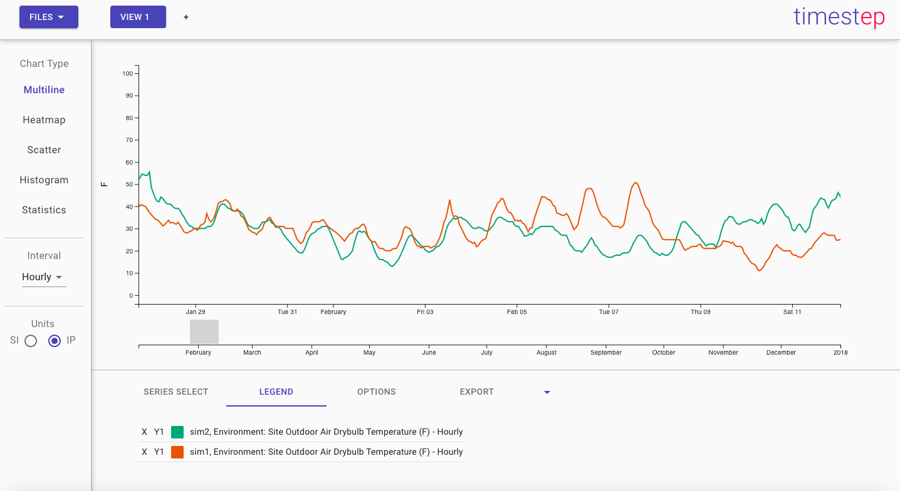
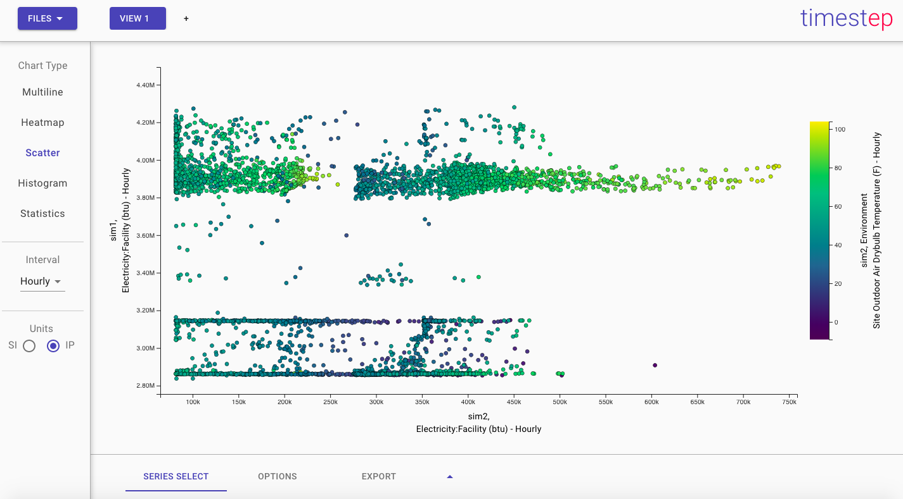

Screenshots

Heatmaps with Variable Color Domain

Scatter Plots with Color Dimensions

Interactive Line Plots with Multiple Axes

Histograms with Variable Bin Settings

Statistical Summaries

Live-Searchable Reports

Support for Multiple Simulations (Line Plot)

Support for Multiple Simulations (Scatter)